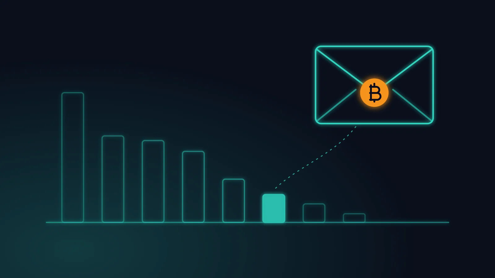

La risposta breve
Con 50 sat/vB, dal 2019 a oggi, la transazione dell'eredità sarebbe entrata in un blocco entro una settimana nel 98% dei casi, ed entro un mese quasi sempre. Nel periodo peggiore, a cavallo tra dicembre 2023 e gennaio 2024, l'attesa sarebbe stata di 32 giorni. Con 20 sat/vB, nello stesso periodo, sarebbero stati 99.
Il costo? Circa 10.000 satoshi per eredità, pochi euro, pagati una volta sola, il giorno della consegna. Non prima.
La transazione dell'eredità e la sua commissione
Con il protocollo BAL la tua eredità è una transazione Bitcoin già firmata che porta i fondi ai tuoi eredi, ma che la rete accetta solo da una certa data in poi. La prepari oggi, la consegni già firmata ai custodi (i Will-Executor), e loro la trasmettono alla rete quando arriva il giorno. Se nel frattempo sei ancora qui, la rinnovi e la data si sposta in avanti.
Ogni transazione Bitcoin paga una piccola commissione ai miner, in satoshi per byte virtuale (sat/vB). Di solito la si sceglie al momento dell'invio, guardando quanto è piena la rete. La transazione dell'eredità invece è firmata oggi: la sua commissione è scritta dentro e non si può più cambiare. Non si può alzarla dopo (RBF), e oggi i custodi non la accelerano con una seconda transazione (CPFP).
Il punto
Dobbiamo scegliere oggi una commissione che funzioni tra 5, 10 o più anni, senza sapere com'è la rete in quel giorno. Non serve che parta in pochi minuti: il custode può consegnare anche una settimana o un mese dopo. Serve che parta comunque.
La rete Bitcoin a volte è piena
Nei blocchi c'è posto per un numero limitato di transazioni, e i miner scelgono prima quelle che pagano di più. Quasi sempre la rete chiede poco, pochi sat/vB. Ma ci sono stati due tipi di momenti difficili:
- Picchi brevi, di ore o pochi giorni: per esempio il giorno dell'halving di aprile 2024. Non sono un problema per l'eredità: il custode aspetta che passino.
- Periodi lunghi di rete piena, di settimane o mesi: per esempio tra novembre 2023 e febbraio 2024. Sono questi a decidere la commissione giusta.
Cosa dicono i dati
Abbiamo preso le commissioni reali dei blocchi, giorno per giorno, dal 2017 a oggi. Poi ci siamo chiesti: se la transazione partisse in un giorno qualunque, quanto dovrebbe aspettare prima di entrare in un blocco? I grafici mostrano il periodo dal 2019 in poi, cioè la rete di oggi.
Scendendo da 10 a 50 sat/vB, il caso peggiore crolla da 148 a 32 giorni. Da 50 in su si guadagna sempre meno: 21 giorni con 75, 10 con 100, mentre il costo continua a salire.
| sat/vB | Entro 7 giorni | Entro 30 giorni | Attesa più lunga | Costo |
|---|---|---|---|---|
| 10 | 77% | 89% | 148 giorni | circa 1,30 € |
| 20 | 88% | 96% | 99 giorni | circa 2,70 € |
| 25 | 91% | 97% | 94 giorni | circa 3,40 € |
| 30 | 93% | 98% | 82 giorni | circa 4,00 € |
| 40 | 96,5% | 99,3% | 50 giorni | circa 5,40 € |
| 50 | 98% | 99,9% | 32 giorni | circa 6,70 € |
| 75 | 99,4% | 100% | 21 giorni | circa 10 € |
| 100 | 99,7% | 100% | 10 giorni | circa 13,40 € |
Il costo è calcolato per una transazione di circa 200 vB, al prezzo di novembre 2026 (circa 67.000 € per bitcoin). Prima del 2019 la rete era molto più cara: nel 2017, anche con 50 sat/vB, l'attesa più lunga sarebbe stata di circa 160 giorni. Oggi la rete è diversa, ma è un buon promemoria di cosa può succedere.
Perché 50 e non 20 o 25
- È il punto in cui la curva si appiattisce. Fino a 50 ogni sat/vB in più riduce molto l'attesa nei periodi difficili; dopo, si paga di più per guadagnare pochi giorni.
- Il costo resta piccolo. Circa 6,70 € contro 2,70 € con 20 sat/vB, pagati solo il giorno della consegna, una volta sola, anche se la transazione è stata data a più custodi: ne parte una.
- Dipendi meno dal custode. Con 20 o 25 sat/vB la transazione passa comunque, prima o poi, ma il custode deve continuare a ritrasmetterla per mesi. Con 50 di solito bastano pochi giorni.
- Il futuro è incerto. Con gli halving la ricompensa dei blocchi scende, e le commissioni potrebbero contare di più. Raddoppiare il margine oggi costa pochi euro.
E se la transazione resta in attesa?
Non è persa. I nodi della rete tengono in attesa una transazione per circa due settimane, e la scartano prima se la rete è molto piena. Il custode allora la ritrasmette, finché non entra in un blocco. Ha tutto l'interesse a farlo: il suo compenso arriva solo quando la transazione viene accettata. E poiché è affidata a più custodi, basta che uno di loro la mandi.
Come abbiamo fatto i conti
Per ogni giorno dal 1° gennaio 2017 al 17 novembre 2026 abbiamo preso la commissione pagata dal 10% più economico delle transazioni entrate nei blocchi di quel giorno (media giornaliera). Se la commissione della transazione è almeno quella cifra, quel giorno entra. È un conto prudente: dentro lo stesso giorno, di notte e nel fine settimana, la soglia scende spesso sotto la media, quindi nella realtà si passa un po' prima.
Sono dati del passato: non garantiscono il futuro. Servono a scegliere una commissione con un buon margine, sapendo cosa è già successo.
Fonti:
- Commissioni dei blocchi, dati giornalieri: mempool.space
- Protocollo BAL: bitcoin-after.life
Questo articolo ha finalità educative. SAFE21 non prende mai in custodia i tuoi fondi: le chiavi restano sempre nelle tue mani. Le transazioni Bitcoin sono irreversibili.